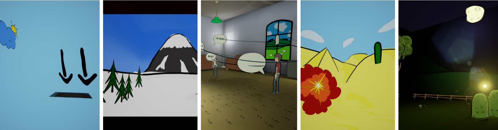

Virtual UNREALity: Exploring Alternative Visualization Techniques for Virtual Reality

Authors. Natalie Hube, Hannes Grusla, Mathias Müller, Ingmar S. Franke, Tobias Günther, Rainer Groh
Venue. xCoAX (2016) Full Paper
Type. Full Paper
Abstract. Virtual Reality (VR) offers new ways to perceive and interact with virtual content. Apart from photo-realism, VR can be used to explore new ways of visualization and interaction. In this contribution, we describe two student projects, which focused on creating innovative concepts for an artistic VR experience. We provide a review of sources of inspiration ranging from standard NPR-techniques through movies, interactive artworks and games to phenomena of human perception. Based on this wide collection of material we describe the prototypes, and discuss observations during implementation and from user feedback. Finally, possible future directions to use the potential of VR as a tool for novel, artful and unconventional experiences are discussed.